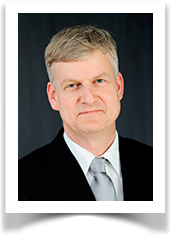
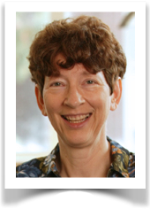

Presentation/Paper:
Please find the slides of the keynote here
Abstract:
Software forms an integral part of the most complex
artifacts built by humans. Communication, production, distribution, healthcare, transportation, banking,
education, entertainment, government, and trade all increasingly rely on systems driven by software. Such
systems may be used in ways not anticipated at design time as the context in which they operate is
constantly changing and humans may interact with them an unpredictable manner. However, at the same time, we
are able to collect unprecedented collections of event data describing what people and organizations are
actually doing. Recent developments in process mining make it possible to analyze such event data, thereby
focusing on behavior rather than correlations and simplistic performance indicators. For example, event logs
can be used to automatically learn end-to-end process models. Next to the automated discovery of the real
underlying process, there are process mining techniques to analyze bottlenecks, to uncover hidden
inefficiencies, to check compliance, to explain deviations, to predict performance, and to guide users
towards "better" processes. Process mining reveals how people really work and often reveals what
they would really like to do. Event-based analysis may reveal workarounds and remarkable differences between
people and organizations. In his keynote, Wil van der Aalst highlights current research on comparative
process mining. One can compare event data with normative process models and see where people deviate. Some
of these deviations may be positive and one can learn from them. Other deviations may reveal inefficiencies,
design flaws, or even fraudulent behavior. One can also use process cubes to compare different systems or
groups of people. Through slicing, dicing, rolling-up, and drilling-down we can view event data from
different angles and produce process mining results that can be compared.
Bio:
Prof.dr.ir. Wil van der Aalst is a full professor of
Information Systems at the Technische Universiteit Eindhoven (TU/e). He is also the Academic Supervisor of
the International Laboratory of Process-Aware Information Systems of the National Research University,
Higher School of Economics in Moscow. Moreover, since 2003 he has a part-time appointment at Queensland
University of Technology (QUT). At TU/e he is the scientific director of the Data Science Center Eindhoven
(DSC/e). His personal research interests include workflow management, process mining, Petri nets, business
process management, process modeling, and process analysis. Wil van der Aalst has published more than 165
journal papers, 17 books (as author or editor), 350 refereed conference/workshop publications, and 60 book
chapters. Many of his papers are highly cited (he one of the most cited computer scientists in the world and
has an H-index of 110 according to Google Scholar) and his ideas have influenced researchers, software
developers, and standardization committees working on process support. He has been a co-chair of many
conferences including the Business Process Management conference, the International Conference on
Cooperative Information Systems, the International conference on the Application and Theory of Petri Nets,
and the IEEE International Conference on Services Computing. He is also editor/member of the editorial board
of several journals, including Computing, Distributed and Parallel Databases, Software and Systems Modeling,
the International Journal of Business Process Integration and Management, the International Journal on
Enterprise Modelling and Information Systems Architectures, Computers in Industry, Business &
Information Systems Engineering, IEEE Transactions on Services Computing, Lecture Notes in Business
Information Processing, and Transactions on Petri Nets and Other Models of Concurrency. In 2012, he received
the degree of doctor honoris causa from Hasselt University. In 2013, he was appointed as Distinguished
University Professor of TU/e and was awarded an honorary guest professorship at Tsinghua University. He is
also a member of the Royal Netherlands Academy of Arts and Sciences (Koninklijke Nederlandse Akademie van
Wetenschappen), Royal Holland Society of Sciences and Humanities (Koninklijke Hollandsche Maatschappij der
Wetenschappen) and the Academy of Europe (Academia Europaea).
More about Wil van der Aalst: http://wwwis.win.tue.nl/~wvdaalst/

Presentation/Paper:
Please find the paper
of the keynote here
Abstract:
End-user programming has become pervasive in our society,
with end users programming simulations, courseware, spreadsheets, macros, mashups, and more. In this talk,
we will consider what happens when we add to end-user programming environments consideration of the software
lifecycle beyond the "coding" phase. Considering other phases is necessary, because there is ample
evidence that the programs end users create are filled with errors. To help address this problem, we have
been working on a software "engineering" methodology designed specifically for end users.
Because the user may have no expertise or even interest in software engineering, we do not propose to transform end users into engineers. Rather, our approach is to tightly integrate elements of design, implementation, component integration, debugging, testing, and maintenance, supported behind the scenes by analysis and inferential reasoning, to help the user reason about the dependability of their software as they work with it, in a manner that respects the user's problem-solving directions to an extent unprecedented in existing software development environments.
In this talk, we describe the present state of EUSE, and challenges in moving forward. We show the challenges of avoiding becoming over-siloed. We then show that focusing on the in-the-moment intents of end-user developers can be used to derive a number of promising directions forward for EUSE researchers, and how theories can help us further de-silo future EUSE research. Finally, we discuss how overcoming challenges for the future of end-user software engineering may also bring direct benefits to the future of “classic” software engineering.
Bio:
Margaret Burnett's research is in human issues of software
development, which lies in the intersection of HCI and software engineering. Her current research focuses on
end-user programming, end-user software engineering, information foraging theory as applied to programming,
and gender issues in those contexts.
End-user software engineering is the first research area to rigorously consider the problem of dependability in end-user programming, and Burnett led in founding this research area. Her team's "WYSIWYT" systematic testing approach for end-user programmers initiated the groundwork, and in 2003, she co-founded and became Project Director of the EUSES Consortium. Under her leadership, this collaboration grew to 10 institutions whose contributions have helped ordinary end users achieve up to 10 times greater effectiveness at guarding against software defects, receiving wide recognition for technical quality (11 Best Paper recognitions for the project).
Burnett's awards for her own work include several Best Paper recognitions, IBM's International Faculty Award, and the NSF Young Investigator Award. She was recently honored with her university's Excellence in Graduate Mentoring Award, College of Engineering's Research Award, College of Engineering's Research Collaboration Award, and the Elizabeth P. Ritchie Distinguished Professor Award. She also serves on a variety of HCI and Software Engineering conference program committees, and currently co-chairs the Academic Alliance of the National Center for Women & Information Technology (NCWIT).
More about Margaret Burnett: http://eecs.oregonstate.edu/people/burnett
| March 30, 2020 | Submission |
| May 11, 2020 | Notification to Author |
| June 05, 2020 | Camera-ready due |
| May 26, 2020 | Submission |
| June 12, 2020 | Notification to Author |
| June 26, 2020 | Camera-ready due |
Conference Dates: August 26 - 28, 2020